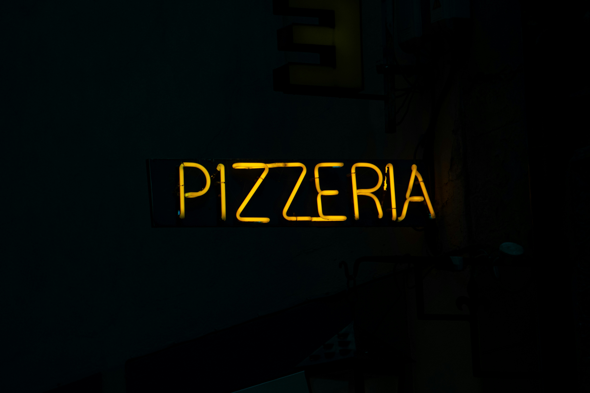
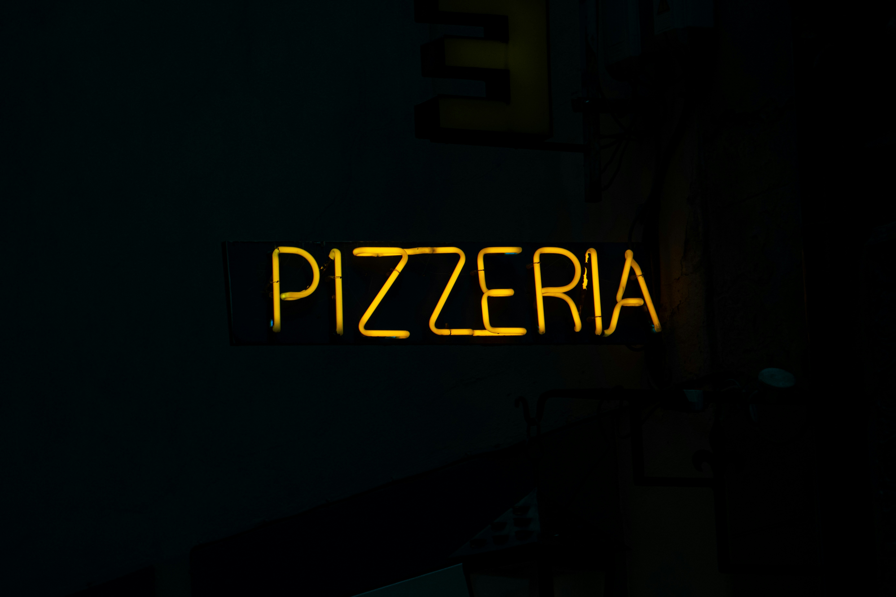

Pizza Margherita

La pizza Margarita es una joya de la gastronomía italiana, simple pero llena de historia y sabor. Su origen se remonta a 1889 en Nápoles, cuando el chef Raffaele Esposito la creó en honor a la reina Margarita de Saboya. Para representar los colores de la bandera italiana, utilizó ingredientes básicos pero deliciosos: tomate, mozzarella y albahaca. Esta combinación no solo es visualmente atractiva, sino que también resalta el equilibrio perfecto entre acidez, cremosidad y frescura.
Para preparar una auténtica pizza Margarita, se comienza con una masa bien trabajada, hecha con harina, agua, levadura y un toque de sal. Se deja reposar hasta que doble su tamaño, permitiendo que desarrolle su característico sabor y textura aireada. Luego, se extiende con las manos para mantener una base ligera y esponjosa. La salsa se elabora con tomates frescos triturados, un chorrito de aceite de oliva y una pizca de sal, sin necesidad de cocción previa para conservar su frescura.
El montaje es sencillo pero esencial: se esparce la salsa sobre la masa, se colocan generosos trozos de mozzarella (idealmente de búfala para una experiencia auténtica) y se hornea en un horno bien caliente hasta que los bordes estén dorados y crujientes. Al salir del horno, se agregan hojas de albahaca fresca y un ligero toque de aceite de oliva para potenciar los sabores. Así, con solo unos pocos ingredientes, se logra una pizza que encapsula la esencia de Italia en cada bocado.
 
